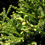

Aktuality
Souhrn událostí uplynulého dne – 23.11. 2020
24. 11. 2020 | Zdroj: Agris | Článek
Potravinářská inspekce zakázala 300 kg zeleného čaje s 5x překročeným
limitem pro insekticid permethrin. Nejvíc smluv z tendru Lesů ČR za 5 mld. má Uniles z
Agrofertu.
Změny v evidenci chmelnic a certifikaci chmele probere vláda. Potravinová sbírka vynesla 440 tun
zboží pro potřebné. Nejvíce v historii.
Dynamické změny v severním Atlantiku ovlivní brzy počasí v Česku
23. 11. 2020 | Zdroj: ČT 24 | Odkaz
Počasí v Česku bylo doposud velmi klidné – v dalších dnech se to ale
díky
situaci nad Atlantikem změní. Vytvoří se tam totiž několik hlubokých tlakových níží a ty mohou i
významnějším způsobem ovlivnit evropskou cirkulaci.
Řezník Aulický: Lidé víc vyhledávají řemeslné výrobky
23. 11. 2020 | Zdroj: ČTK | Článek
Lidé v poslední době víc vyhledávají řemeslné výrobky, říká řezník
Tomáš
Aulický. Ve své provozovně ve Velké Dobré na Kladensku plánuje příští rok přístavbu lednic,
bourárny
a obchodu. Jeho cílem není vybudovat kolos, ale vesnické řeznictví, kde budou lidé moci
nahlédnout
do výroby i dalších prostor. Řekl to v rozhovoru s ČTK.
Pěstitel: Déšť pomohl, vánoční stromky jsou zelenější

23. 11. 2020 | Zdroj: ceskenoviny.cz | Článek
Pro pěstitele vánočních stromků nastalo nejhektičtější období roku. V
Nekoři na Orlickoústecku v týdnu začali řezat jedle, borovice i smrky. Prodej zahájí na začátku
prosince. ČTK to řekl majitel firmy Lesní školy Nekoř Václav Faltus.
Týden bude ve znamení mrznoucí mlhy. Může i mrholit nebo slabě
sněžit
23. 11. 2020 | Zdroj: iDNES.cz | Odkaz
Po deštivějším pondělku se prosadí chladné inverzní počasí. Slunce se
objeví spíše jen sporadicky, větší naděje je na horách, kde by mohlo být tepleji. Naopak poměrně
častým jevem budou mrznoucí mlhy, při kterých se může vytvářet námraza. Z nízké oblačnosti by
také
mohlo mrholit nebo slabě sněžit.
Další novinky
Aktuální ceny
| 23.11.2020 |
Pšenice |
582,60 USD/short ton |
| 30.10.2020 |
Jateční býci S,E,U,R (ž. hm.) |
43,79 Kč/kg |
| 23.11.2020 |
Sójový šrot |
336,00 USD/short ton |
| 20.11.2020 |
Vepřová plec bez kosti |
77,32 Kč/kg |
| 23.11.2020 |
Sójový šrot |
337,90 USD/short ton |
| 23.11.2020 |
Hovězí maso |
112,65 USc/lb |